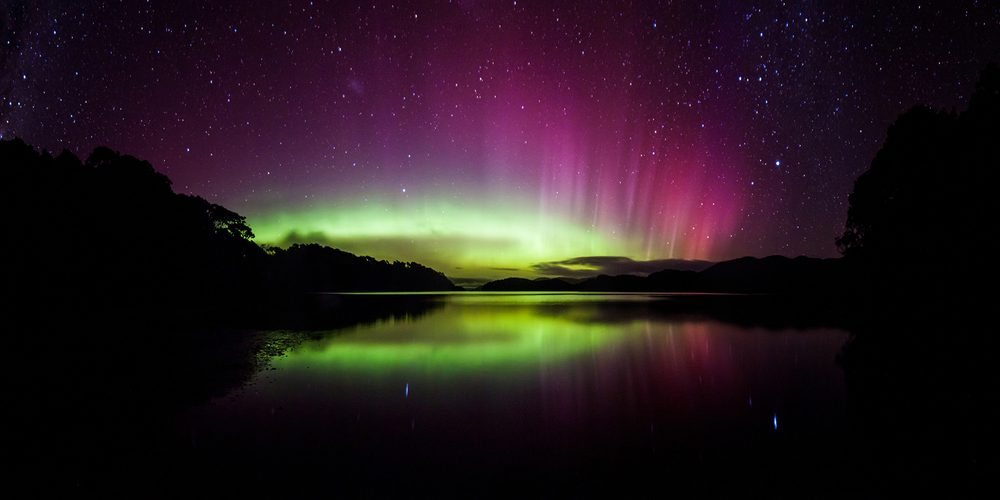

Land of the Glowing Skies: How Rakiura Got Its Name
Transcript
Have you ever had a moment of pure embarrassment where your cheeks have blushed red, burning in shame? Today we are going to learn of a chief from a long time ago who was so embarrassed that his glowing cheeks lit up the entire night sky. Nowadays, we remember his blushing cheeks by the name Rakiura, the Māori name for Stewart Island, Aotearoa New Zealand’s third largest island.
As the narrative goes, Te Rakitamau was a chief who was looking for a wife. He left his home and sailed down towards the island we now know as Rakiura where he came upon a high-ranking family with two beautiful daughters. When Raki asked the eldest daughter to be his wife, she turned him down, which made Raki very embarrassed. In his embarrassment, Raki’s face began to glow in shame. “But, he thought, everything will be okay, because I can ask the youngest daughter to be my wife.” Unfortunately for Raki, the youngest daughter also turned him down.
After this second embarrassment, Raki’s blushing face was said to glow so bright and strong in shame that it would light up the southern skies forevermore.
Raki’s embarrassment is captured in the phrase: Te raki o te uraka o Te Rakitamau—which translates to "The great and deep blushing of Te Rakitamau." Over time, as stories do, the phrase was shortened to Te raki ura o Te Rakitamau—"The glowing sky of Te Rakitamau"—before finally shortening again into the single, beautiful name we use today: Rakiura.
The skies above Rakiura often blush a deep, fiery red at sunrise and sunset, just like the embarrassed Te Rakitamau. On dark, clear nights, you might even see the dancing ribbons of the southern lights, glowing in the sky like someone whose cheeks are glowing red in shame. This traditional narrative is also the reason why the highest mountain on Rakiura is called Hananui, which translates to “The great blush.” Every fiery sunrise and sunset, and the glowing of the southern lights above Rakiura are reminders of Te Rakitamau's embarrassing blush.
Rakiura Podcasts. (2026). Land of the Glowing Skies: How Rakiura Got Its Name [Audio recording]. Rakiura Podcasts.